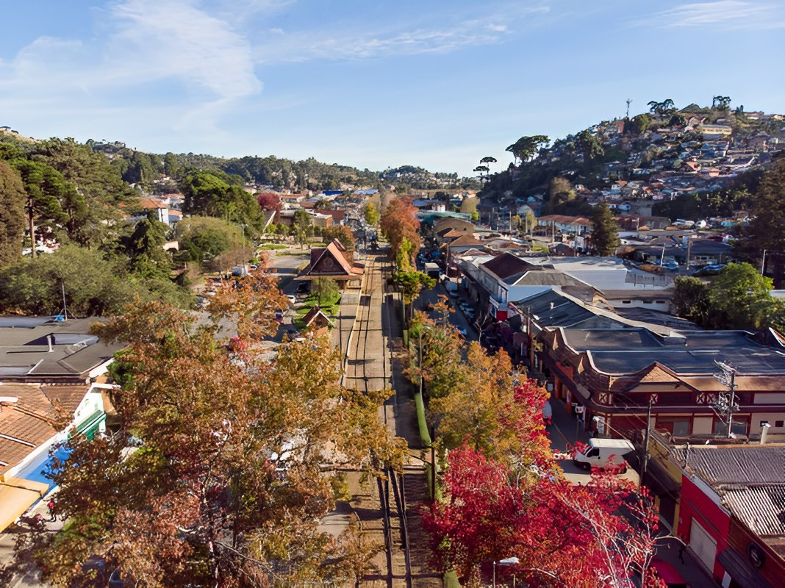

Mais vendidos
Angra dos Reis
Angra dos Reis é uma cidade costeira no Rio de Janeiro conhecida por suas praias, ilhas e águas cristalinas. Com um centro histórico charmoso, a cidade oferece uma combinação única de belezas naturais e cultura local. Os visitantes podem desfrutar de passeios de barco, mergulho e trilhas ecológicas, explorando ilhas paradisíacas como a Ilha Grande. Angra dos Reis é um destino turístico imperdível para quem busca natureza, lazer e uma experiência única.

Campos do Jordão
Campos do Jordão é uma charmosa cidade localizada na Serra da Mantiqueira, no estado de São Paulo. Conhecida como a "Suíça Brasileira", a cidade encanta os visitantes com seu clima frio, arquitetura europeia e paisagens deslumbrantes. Com sua atmosfera romântica e aconchegante, Campos do Jordão oferece uma variedade de atividades, como passeios de teleférico, visitas a jardins e parques, além de uma gastronomia sofisticada e diversificada. Campos do Jordão é um destino encantador para aqueles que buscam um refúgio de montanha, repleto de beleza e elegância.

São Roque
São Roque é uma cidade encantadora localizada no estado de São Paulo. Conhecida por suas belas paisagens e pela produção de vinhos, São Roque é um destino ideal para os amantes da natureza e gastronomia. Com suas vinícolas e restaurantes aconchegantes, os visitantes podem desfrutar de degustações de vinhos e de uma culinária deliciosa. Além disso, a cidade oferece atividades ao ar livre, como trilhas ecológicas e esportes de aventura. São Roque é um refúgio encantador para quem busca tranquilidade e sabor em meio à natureza.